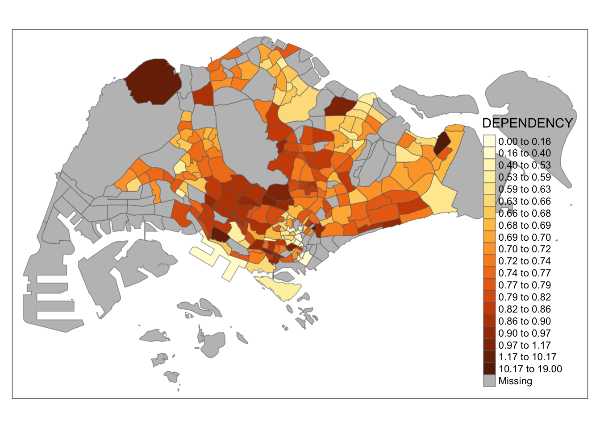

pacman::p_load(sf, tmap, tidyverse)1B: Thematic Mapping and GeoVisualisation with R
In this exercise, we will learn to create thematic maps and perform geovisualization in R using the tmap package, including data preparation, classification, color schemes, and advanced mapping techniques.
1 Exercise 1B Reference
R for Geospatial Data Science and Analytics - 2 Thematic Mapping and GeoVisualisation with R
2 Overview
In general, thematic mapping involves the use of map symbols to visualize selected properties of geographic features that are not naturally visible, such as population, temperature, crime rate, and property prices.
Meanwhile, geovisualization leverages graphical representation to make places, phenomena, or processes visible, tapping into our spatial cognition and visual processing abilities.
3 Learning Outcome
- Understanding thematic mapping and geovisualization concepts.
-
Installing and using the
tmappackage for creating choropleth maps. -
Importing and preparing geospatial and attribute data using
sfandreadrpackages. -
Wrangling data with
dplyrandtidyrto prepare for mapping. - Performing georelational joins between geospatial and attribute data.
-
Creating quick and advanced thematic maps using
tmapelements and functions. - Customizing map layouts, color schemes, and data classification methods.
- Plotting small multiple maps and mapping spatial objects meeting specific criteria.
4 The Data
The following data sources will be used in this exercise:
| Dataset | Source | Description | Format |
|---|---|---|---|
Master Plan 2014 Subzone Boundary (Web)
(MP14_SUBZONE_WEB_PL)
|
data.gov.sg | Geospatial data representing the geographical boundaries of Singapore’s planning subzones based on URA Master Plan 2014. | ESRI Shapefile |
Singapore Residents by Planning Area / Subzone, Age Group,
Sex, and Type of Dwelling (2011-2020)
(respopagesextod2011to2020.csv)
|
Department of Statistics, Singapore |
Aspatial data containing demographic information; fields
PA and SZ can be used to link to the
MP14_SUBZONE_WEB_PL shapefile.
|
CSV |
This table summarizes the datasets required, including their descriptions, sources, and formats.
5 Installing and Loading the R Packages
The following R packages will be used in this exercise:
| Package | Purpose | Use Case in Exercise |
|---|---|---|
| tmap | Thematic mapping for visualizing geospatial data. | Creating and customizing thematic maps. |
| sf | Handling geospatial data in simple features format. | Importing, managing, and processing geospatial data. |
| readr |
Importing delimited text files (part of
tidyverse).
|
Loading CSV data files. |
| tidyr |
Tidying data into a usable format (part of
tidyverse).
|
Reshaping and organizing data. |
| dplyr |
Data wrangling and transformation tasks (part of
tidyverse).
|
Manipulating and transforming datasets. |
To install and load these packages in R, use the following code:
6 Import Geospatial Data into R
The code block below uses st_read() function of sf package to import
the MP14_SUBZONE_WEB_PL shapefile into R as a polygon
feature data frame.
mpsz = st_read(dsn = "data/geospatial",
layer = "MP14_SUBZONE_WEB_PL")Reading layer `MP14_SUBZONE_WEB_PL' from data source
`/Users/walter/code/isss626/isss626-gaa/Hands-on_Ex/Hands-on_Ex01/data/geospatial'
using driver `ESRI Shapefile'
Simple feature collection with 323 features and 15 fields
Geometry type: MULTIPOLYGON
Dimension: XY
Bounding box: xmin: 2667.538 ymin: 15748.72 xmax: 56396.44 ymax: 50256.33
Projected CRS: SVY21When you display mpsz, only the first ten records are shown because R, by default, limits the number of printed rows to make output more manageable and readable.
mpszSimple feature collection with 323 features and 15 fields
Geometry type: MULTIPOLYGON
Dimension: XY
Bounding box: xmin: 2667.538 ymin: 15748.72 xmax: 56396.44 ymax: 50256.33
Projected CRS: SVY21
First 10 features:
OBJECTID SUBZONE_NO SUBZONE_N SUBZONE_C CA_IND PLN_AREA_N
1 1 1 MARINA SOUTH MSSZ01 Y MARINA SOUTH
2 2 1 PEARL'S HILL OTSZ01 Y OUTRAM
3 3 3 BOAT QUAY SRSZ03 Y SINGAPORE RIVER
4 4 8 HENDERSON HILL BMSZ08 N BUKIT MERAH
5 5 3 REDHILL BMSZ03 N BUKIT MERAH
6 6 7 ALEXANDRA HILL BMSZ07 N BUKIT MERAH
7 7 9 BUKIT HO SWEE BMSZ09 N BUKIT MERAH
8 8 2 CLARKE QUAY SRSZ02 Y SINGAPORE RIVER
9 9 13 PASIR PANJANG 1 QTSZ13 N QUEENSTOWN
10 10 7 QUEENSWAY QTSZ07 N QUEENSTOWN
PLN_AREA_C REGION_N REGION_C INC_CRC FMEL_UPD_D X_ADDR
1 MS CENTRAL REGION CR 5ED7EB253F99252E 2014-12-05 31595.84
2 OT CENTRAL REGION CR 8C7149B9EB32EEFC 2014-12-05 28679.06
3 SR CENTRAL REGION CR C35FEFF02B13E0E5 2014-12-05 29654.96
4 BM CENTRAL REGION CR 3775D82C5DDBEFBD 2014-12-05 26782.83
5 BM CENTRAL REGION CR 85D9ABEF0A40678F 2014-12-05 26201.96
6 BM CENTRAL REGION CR 9D286521EF5E3B59 2014-12-05 25358.82
7 BM CENTRAL REGION CR 7839A8577144EFE2 2014-12-05 27680.06
8 SR CENTRAL REGION CR 48661DC0FBA09F7A 2014-12-05 29253.21
9 QT CENTRAL REGION CR 1F721290C421BFAB 2014-12-05 22077.34
10 QT CENTRAL REGION CR 3580D2AFFBEE914C 2014-12-05 24168.31
Y_ADDR SHAPE_Leng SHAPE_Area geometry
1 29220.19 5267.381 1630379.3 MULTIPOLYGON (((31495.56 30...
2 29782.05 3506.107 559816.2 MULTIPOLYGON (((29092.28 30...
3 29974.66 1740.926 160807.5 MULTIPOLYGON (((29932.33 29...
4 29933.77 3313.625 595428.9 MULTIPOLYGON (((27131.28 30...
5 30005.70 2825.594 387429.4 MULTIPOLYGON (((26451.03 30...
6 29991.38 4428.913 1030378.8 MULTIPOLYGON (((25899.7 297...
7 30230.86 3275.312 551732.0 MULTIPOLYGON (((27746.95 30...
8 30222.86 2208.619 290184.7 MULTIPOLYGON (((29351.26 29...
9 29893.78 6571.323 1084792.3 MULTIPOLYGON (((20996.49 30...
10 30104.18 3454.239 631644.3 MULTIPOLYGON (((24472.11 29...6.1 Importing Attribute Data into R
Next, respopagsex2011to2020.csv file is imported into RStudio and save the file into an R dataframe called popdata.
The task will be performed by using read_csv() function of readr package as shown in the code block below.
popdata <- read_csv("data/aspatial/respopagesextod2011to2020.csv")6.2 Data Preparation
Before a thematic map can be prepared, it is required to prepare a data table with year 2020 values. The data table should include the variables PA, SZ, YOUNG, ECONOMY ACTIVE, AGED, TOTAL, DEPENDENCY.
- YOUNG: age group 0 to 4 until age groyup 20 to 24,
- ECONOMY ACTIVE: age group 25-29 until age group 60-64,
- AGED: age group 65 and above,
- TOTAL: all age group, and
- DEPENDENCY: the ratio between young and aged against economy active group
6.2.1 Data wrangling
The following data wrangling and transformation functions will be used:
- pivot_wider() of tidyr package, and
- mutate(), filter(), group_by() and select() of dplyr package
# Step 1: Filter the data for the year 2020
popdata2020 <- popdata %>%
filter(Time == 2020)
# Step 2: Group the data by PA (Planning Area), SZ (Subzone), and AG (Age Group)
popdata2020 <- popdata2020 %>%
group_by(PA, SZ, AG)
# Step 3: Summarize the data by calculating the total population (POP) for each group
popdata2020 <- popdata2020 %>%
summarise(POP = sum(Pop)) %>%
ungroup()
# Step 4: Reshape the data from long to wide format, with age groups as column names
popdata2020 <- popdata2020 %>%
pivot_wider(names_from = AG, values_from = POP)
# Step 5: Calculate the YOUNG population (sum of selected age groups)
popdata2020 <- popdata2020 %>%
mutate(YOUNG = rowSums(.[3:6]) + rowSums(.[14]))
# Step 6: Calculate the ECONOMICALLY ACTIVE population (sum of selected age groups)
popdata2020 <- popdata2020 %>%
mutate(`ECONOMY ACTIVE` = rowSums(.[7:11]) + rowSums(.[13:15]))
# Step 7: Calculate the AGED population (sum of selected age groups)
popdata2020 <- popdata2020 %>%
mutate(AGED = rowSums(.[16:21]))
# Step 8: Calculate the TOTAL population (sum of all age groups)
popdata2020 <- popdata2020 %>%
mutate(TOTAL = rowSums(.[3:21]))
# Step 9: Calculate the DEPENDENCY ratio (ratio of YOUNG and AGED to ECONOMY ACTIVE)
popdata2020 <- popdata2020 %>%
mutate(DEPENDENCY = (YOUNG + AGED) / `ECONOMY ACTIVE`)
# Step 10: Select the relevant columns to be retained in the final dataset
popdata2020 <- popdata2020 %>%
select(PA, SZ, YOUNG, `ECONOMY ACTIVE`, AGED, TOTAL, DEPENDENCY)6.2.2 Joining the attribute data and geospatial data
Before performing a georelational join, one additional step is necessary: converting the values in the PA and SZ fields to uppercase. This is because the PA and SZ fields contain both upper- and lowercase letters, whereas the SUBZONE_N and PLN_AREA_N fields are in uppercase.
Next, the left_join() function from the dplyr package is used to merge the geographic data and attribute table, using the planning subzone names (e.g. SUBZONE_N and SZ) as the common identifier.
mpsz_pop2020 <- left_join(mpsz, popdata2020,
by = c("SUBZONE_N" = "SZ"))Note
Key Takeaway:
The left_join() function from the dplyr package is applied to ensure that the resulting output remains a simple features data frame, with mpsz as the left table.
dir.create("data/rds/", recursive = TRUE)
write_rds(mpsz_pop2020, "data/rds/mpszpop2020.rds")7 Choropleth Mapping Geospatial Data Using tmap
Choropleth mapping involves the symbolisation of enumeration units, such as countries, provinces, states, counties or census units, using area patterns or graduated colors. For example, a social scientist may need to use a choropleth map to portray the spatial distribution of aged population of Singapore by Master Plan 2014 Subzone Boundary.
There are two methods for creating thematic maps using tmap:
- Using
qtm()for quick thematic map plotting. - Using individual tmap elements for creating highly customizable maps.
7.1 Plotting a choropleth map quickly by using qtm()
The easiest and quickest to draw a choropleth map using tmap is using qtm(). It is concise and provides a good default visualisation in many cases.
The following code draws a standard choropleth map:
tmap_mode("plot")
qtm(mpsz_pop2020,
fill = "DEPENDENCY")

Note
Key Takeaway:
- tmap_mode(“plot”) is used to generate a static map. To enable interactive mode, use the “view” option.
- The fill argument is used to map the attribute to be visualized (in this case, DEPENDENCY).
7.2 Creating a choropleth map by using tmap’s elements
While qtm() is useful for quickly and easily drawing
choropleth maps, its drawback is the limited control over the
aesthetics of individual layers. To create a high-quality,
cartographic choropleth map like the one shown below, it’s
recommended to use the individual elements provided by
tmap.
tm_shape(mpsz_pop2020)+
tm_fill("DEPENDENCY",
style = "quantile",
palette = "Blues",
title = "Dependency ratio") +
tm_layout(main.title = "Distribution of Dependency Ratio by planning subzone",
main.title.position = "center",
main.title.size = 1.2,
legend.height = 0.45,
legend.width = 0.35,
frame = TRUE) +
tm_borders(alpha = 0.5) +
tm_compass(type="8star", size = 2) +
tm_scale_bar() +
tm_grid(alpha =0.2) +
tm_credits("Source: Planning Sub-zone boundary from Urban Redevelopment Authorithy (URA)\n and Population data from Department of Statistics DOS",
position = c("left", "bottom"))
In the following sub-section, more tmap functions will be used to plot these elements.
7.2.1 Drawing a base map
The basic building block of tmap is tm_shape() followed by one or more layer elemments such as tm_fill() and tm_polygons().
In the code block below, tm_shape() is used to define the input data (i.e mpsz_pop2020) and tm_polygons() is used to draw the planning subzone polygons
tm_shape(mpsz_pop2020) +
tm_polygons()

7.2.2 Drawing a choropleth map using tm_polygons()
To draw a choropleth map showing the geographical distribution of a selected variable by planning subzone, we just need to assign the target variable such as Dependency to tm_polygons().
tm_shape(mpsz_pop2020)+
tm_polygons("DEPENDENCY")

Note
Key takeaways from tm_polygons():
- The default method for interval binning when creating a choropleth map is “pretty.” A detailed explanation of the data classification methods available in tmap will be covered in sub-section 4.3.
-
The default color palette used is
YlOrRdfrom ColorBrewer. More information on color schemes will be explored in sub-section 4.4. - Missing values are automatically represented with a grey shade by default.
7.2.3 Drawing a choropleth map using tm_fill() and *tm_border()**
Actually, tm_polygons() is a wraper of tm_fill() and tm_border(). tm_fill() shades the polygons by using the default colour scheme and tm_borders() adds the borders of the shapefile onto the choropleth map.
The code block below draws a choropleth map by using tm_fill() alone.
tm_shape(mpsz_pop2020)+
tm_fill("DEPENDENCY")

Notice that the planning subzones are shared according to the respective dependecy values
To add the boundary of the planning subzones, tm_borders will be used as shown in the code block below.
tm_shape(mpsz_pop2020)+
tm_fill("DEPENDENCY") +
tm_borders(lwd = 0.1, alpha = 1)

Note that light-gray border lines have been added on the choropleth map.
The alpha option specifies a transparency value ranging from 0 (completely transparent) to 1 (not transparent). By default, the col’s alpha value is used (usually 1).
Beside alpha argument, there are three other arguments for tm_borders(), they are:
- col = border colour,
- lwd = border line width. The default is 1, and
- lty = border line type. The default is “solid”.
7.3 Data classification methods of tmap
Most choropleth maps employ some methods of data classification. The point of classification is to take a large number of observations and group them into data ranges or classes.
tmap provides a total ten data classification methods, namely: fixed, sd, equal, pretty (default), quantile, kmeans, hclust, bclust, fisher, and jenks.
To define a data classification method, the style argument of tm_fill() or tm_polygons() will be used.
7.3.1 Plotting choropleth maps with built-in classification methods
The code block below shows a quantile data classification that used 5 classes.
tm_shape(mpsz_pop2020)+
tm_fill("DEPENDENCY",
n = 5,
style = "quantile") +
tm_borders(alpha = 0.5)
In the code block below, equal data classification method is used.
tm_shape(mpsz_pop2020)+
tm_fill("DEPENDENCY",
n = 5,
style = "equal") +
tm_borders(alpha = 0.5)

Note
Observation: The distribution of quantile data classification method are more evenly distributed then equal data classification method.
Warning
Warning: Maps Lie!
Exercise: Using what you had learned, prepare choropleth maps by using different classification methods supported by tmap and compare their differences.
The tabs below shows the choropleth maps drawn using different classifications methods with the same number of classes (n=5).
tm_shape(mpsz_pop2020)+
tm_fill("DEPENDENCY",
n = 5,
style = "quantile") +
tm_borders(alpha = 0.5)

tm_shape(mpsz_pop2020)+
tm_fill("DEPENDENCY",
n = 5,
style = "equal") +
tm_borders(alpha = 0.5)

tm_shape(mpsz_pop2020)+
tm_fill("DEPENDENCY",
n = 5,
style = "pretty") +
tm_borders(alpha = 0.5)

tm_shape(mpsz_pop2020)+
tm_fill("DEPENDENCY",
n = 5,
style = "jenks") +
tm_borders(alpha = 0.5)
tm_shape(mpsz_pop2020)+
tm_fill("DEPENDENCY",
n = 5,
style = "sd") +
tm_borders(alpha = 0.5)
tm_shape(mpsz_pop2020)+
tm_fill("DEPENDENCY",
n = 5,
style = "hclust") +
tm_borders(alpha = 0.5)
tm_shape(mpsz_pop2020)+
tm_fill("DEPENDENCY",
n = 5,
style = "fisher") +
tm_borders(alpha = 0.5)
tm_shape(mpsz_pop2020)+
tm_fill("DEPENDENCY",
n = 5,
style = "bclust") +
tm_borders(alpha = 0.5)
Committee Member: 1(1) 2(1) 3(1) 4(1) 5(1) 6(1) 7(1) 8(1) 9(1) 10(1)
Computing Hierarchical Clusteringtm_shape(mpsz_pop2020)+
tm_fill("DEPENDENCY",
n = 5,
style = "kmeans") +
tm_borders(alpha = 0.5)
Note
Observation: Different data classification methods produce varying color patterns. Methods like pretty, equal, and sd are more sensitive to outliers, often resulting in fewer distinct areas on the map. In contrast, methods like quantile, jenks, and kmeans create more evenly distributed colors. Therefore, choosing the right classification method based on data distribution is crucial to avoid misleading representations in choropleth maps.
Exercise: Preparing choropleth maps by using similar classification method but with different numbers of classes (i.e. 2, 6, 10, 20). Compare the output maps, what observation can you draw?
The tabs below show choropleth maps with
kmeans classification method. The numbers of
classes used are (2, 6, 10, 20).
tm_shape(mpsz_pop2020)+
tm_fill("DEPENDENCY",
n = 2,
style = "kmeans") +
tm_borders(alpha = 0.5)
tm_shape(mpsz_pop2020)+
tm_fill("DEPENDENCY",
n = 6,
style = "kmeans") +
tm_borders(alpha = 0.5)
tm_shape(mpsz_pop2020)+
tm_fill("DEPENDENCY",
n = 10,
style = "kmeans") +
tm_borders(alpha = 0.5)
tm_shape(mpsz_pop2020)+
tm_fill("DEPENDENCY",
n = 20,
style = "kmeans") +
tm_borders(alpha = 0.5)
Note
Observation: Using different class numbers within the same classification method affects the map’s coloring. With n=2, outliers dominate, resulting in only one distinct area. Increasing the class count distributes the data more evenly across the map.
7.3.2 Plotting choropleth map with custom break
For all the built-in styles, the category breaks are computed internally. In order to override these defaults, the breakpoints can be set explicitly by means of the breaks argument to the tm_fill(). It is important to note that, in tmap the breaks include a minimum and maximum. As a result, in order to end up with n categories, n+1 elements must be specified in the breaks option (the values must be in increasing order).
Before we get started, it is always a good practice to get some descriptive statistics on the variable before setting the break points. Code block below will be used to compute and display the descriptive statistics of DEPENDENCY field.
summary(mpsz_pop2020$DEPENDENCY) Min. 1st Qu. Median Mean 3rd Qu. Max. NA's
0.0000 0.6751 0.7288 0.8084 0.8092 19.0000 92 Based on the results, we choose breakpoints at 0.60, 0.70, 0.80, and 0.90, with the minimum at 0 and maximum at 1. Our breaks vector is c(0, 0.60, 0.70, 0.80, 0.90, 1.00).
Now, we will plot the choropleth map with the following code:
tm_shape(mpsz_pop2020)+
tm_fill("DEPENDENCY",
breaks = c(0, 0.60, 0.70, 0.80, 0.90, 1.00)) +
tm_borders(alpha = 0.5)
7.4 Colour Scheme
tmap supports colour ramps either user-defined or a set of predefined colour ramps from the RColorBrewer package.
7.4.1 Using ColourBrewer palette
To apply a specific color palette, assign it to the palette
argument in tm_fill() as shown below:
tm_shape(mpsz_pop2020)+
tm_fill("DEPENDENCY",
n = 6,
style = "quantile",
palette = "Blues") +
tm_borders(alpha = 0.5)
Notice that the choropleth map is shaded in green.
To reverse the colour shading, add a “-” prefix.
tm_shape(mpsz_pop2020)+
tm_fill("DEPENDENCY",
style = "quantile",
palette = "-Greens") +
tm_borders(alpha = 0.5)
Notice that the colour scheme has been reversed.
7.5 Map Layouts
Map layout refers to the combination of all map elements into a cohensive map. Map elements include among others the objects to be mapped, the title, the scale bar, the compass, margins and aspects ratios. Colour settings and data classification methods covered in the previous section relate to the palette and break-points are used to affect how the map looks.
7.5.1 Map Legend
In tmap, there are several legend options for adjusting the placement, format, and style of the legend.
tm_shape(mpsz_pop2020)+
tm_fill("DEPENDENCY",
style = "jenks",
palette = "Blues",
legend.hist = TRUE,
legend.is.portrait = TRUE,
legend.hist.z = 0.1) +
tm_layout(main.title = "Distribution of Dependency Ratio by planning subzone \n(Jenks classification)",
main.title.position = "center",
main.title.size = 1,
legend.height = 0.45,
legend.width = 0.35,
legend.outside = FALSE,
legend.position = c("right", "bottom"),
frame = FALSE) +
tm_borders(alpha = 0.5)
7.5.2 Map style
tmap allows extensive customization of layout
settings, accessible through the
tmap_style() function. The code below demonstrates
the use of the classic style.
tm_shape(mpsz_pop2020)+
tm_fill("DEPENDENCY",
style = "quantile",
palette = "-Greens") +
tm_borders(alpha = 0.5) +
tmap_style("classic")
7.5.3 Cartographic Furniture
Beside map style, tmap also also provides arguments to draw other map furniture such as compass, scale bar and grid lines. In the following example, tm_compass(), tm_scale_bar() and tm_grid() are used to add compass, scale bar and grid lines onto the choropleth map.
tm_shape(mpsz_pop2020)+
tm_fill("DEPENDENCY",
style = "quantile",
palette = "Blues",
title = "No. of persons") +
tm_layout(main.title = "Distribution of Dependency Ratio \nby planning subzone",
main.title.position = "center",
main.title.size = 1.2,
legend.height = 0.45,
legend.width = 0.35,
frame = TRUE) +
tm_borders(alpha = 0.5) +
tm_compass(type="8star", size = 2) +
tm_scale_bar(width = 0.15) +
tm_grid(lwd = 0.1, alpha = 0.2) +
tm_credits("Source: Planning Sub-zone boundary from Urban Redevelopment Authorithy (URA)\n and Population data from Department of Statistics DOS",
position = c("left", "bottom"))
To reset the default style, use the code below:
tmap_style("white")7.6 Drawing Small Multiple Choropleth Maps
Small multiple maps, also referred to as facet maps, are composed of many maps arrange side-by-side, and sometimes stacked vertically. Small multiple maps enable the visualisation of how spatial relationships change with respect to another variable, such as time.
In tmap, small multiple maps can be created through three methods:
- Assigning multiple values to an aesthetic argument.
-
Defining a grouping variable with
tm_facets(). -
Creating multiple stand-alone maps with
tmap_arrange().
7.6.1 Assigning Multiple Values to an Aesthetic Argument
In this example, small multiple choropleth maps are created by defining ncols in tm_fill()
tm_shape(mpsz_pop2020)+
tm_fill(c("YOUNG", "AGED"),
style = "equal",
palette = "Blues") +
tm_layout(legend.position = c("right", "bottom")) +
tm_borders(alpha = 0.5) +
tmap_style("white")
This example creates small multiple choropleth maps by assigning multiple values to at least one of the aesthetic arguments:

7.6.2 Grouping by a Variable with tm_facets()
This example generates multiple small maps by using
tm_facets().
tm_shape(mpsz_pop2020) +
tm_fill("DEPENDENCY",
style = "quantile",
palette = "Blues",
thres.poly = 0) +
tm_facets(by="REGION_N",
free.coords=TRUE,
drop.shapes=TRUE) +
tm_layout(legend.show = FALSE,
title.position = c("center", "center"),
title.size = 20) +
tm_borders(alpha = 0.5)
7.6.3 Creating Stand-alone Maps with tmap_arrange()
In this example, multiple small choropleth maps are created by creating multiple stand-alone maps with tmap_arrange().
youngmap <- tm_shape(mpsz_pop2020)+
tm_polygons("YOUNG",
style = "quantile",
palette = "Blues")
agedmap <- tm_shape(mpsz_pop2020)+
tm_polygons("AGED",
style = "quantile",
palette = "Blues")
tmap_arrange(youngmap, agedmap, asp=1, ncol=2)

7.7 Mapping Spatial Object by Meeting a Selection Criterion
Instead of creating small multiple choropleth map, you can also use selection function to map spatial objects meeting the selection criterion.
tm_shape(mpsz_pop2020[mpsz_pop2020$REGION_N=="CENTRAL REGION", ])+
tm_fill("DEPENDENCY",
style = "quantile",
palette = "Blues",
legend.hist = TRUE,
legend.is.portrait = TRUE,
legend.hist.z = 0.1) +
tm_layout(legend.outside = TRUE,
legend.height = 0.45,
legend.width = 5.0,
legend.position = c("right", "bottom"),
frame = FALSE) +
tm_borders(alpha = 0.5)